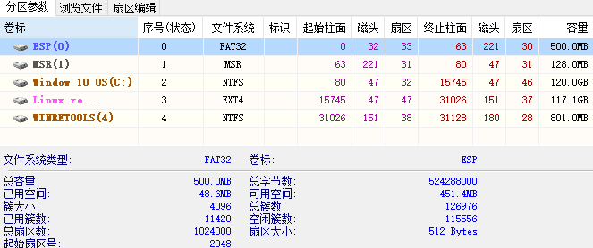
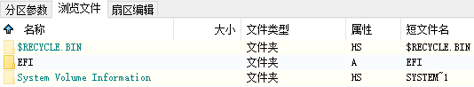
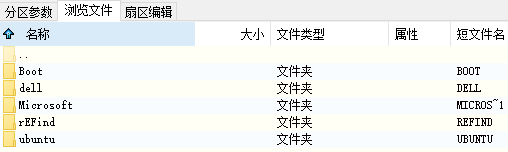
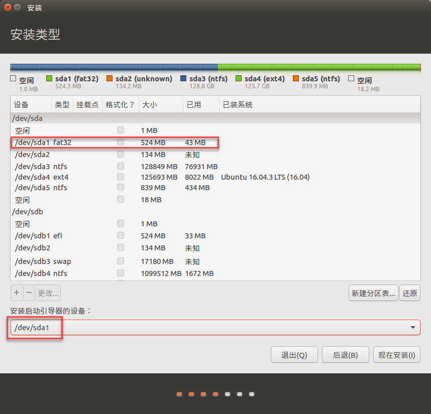
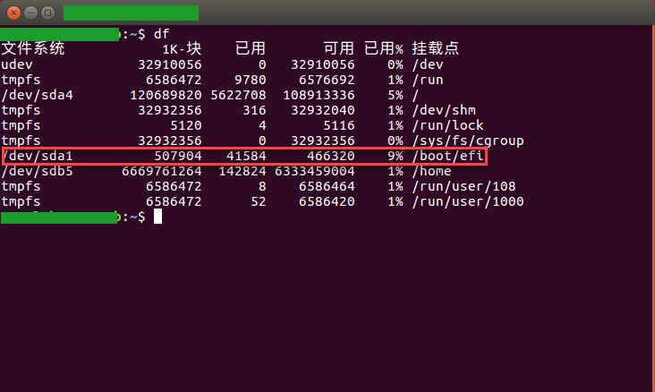
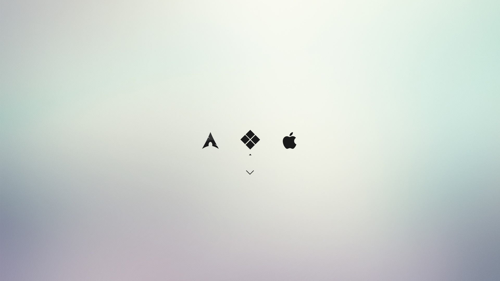

此文最早由我在简书发表，现搬运到本人博客。
写这篇文章的初衷在于网络上关于 Windows 和 Linux 双系统的安装大多停留在 BIOS/MBR 时代，而现在计算主板主要为 UEFI/GPT 的架构。本文假设读者已经重装过几次 Windows 系统，对计算机基础知识有一定了解，知道如何进入 BIOS，知道如何对硬盘进行分区。如果在阅读本文过程中遇到不太熟悉的概念，请务必先自行搜索并查阅相关资料。本文不提供 Win10 安装方法，以下内容默认用户电脑已安装 Win10 系统。
一、Win10 准备工作
1. 禁用快速启动
“快速启动” 是 Windows 8 时代引进的新特性，快速启动会关闭用户会话，但不再关闭内核会话，而是将其休眠。关机后部分系统数据以低电压加载至内存，开机时直接从内存调用。同时内核、系统相关的模块及部分驱动会被写到磁盘文件中，机箱断电后由硬盘启动，直接将这里的内容写回内存，从而提高系统启动速度。完全休眠包含大量正在由应用程序使用的内存页，相比之下内核会话休眠数据要小得多，这将大大降低写入磁盘所需的时间。建议关闭该特性的原因是，“快速启动” 会影响 Grub 开机引导过程，可能出现无法载入 Ubuntu 的状况。
按如下操作取消快速启动：
电源选项 > 选择电源按钮的功能 > 更改当前不可用的设置 > 关机设置 > [取消勾选] 启用快速启动 > 保存修改
2. 禁用安全启动（Secure Boot）
UEFI 有 “安全启动” 这个特点，引导程序只会启动那些得到 UEFI 固件签署的引导装载程序。此安全功能可以防止 Rootkit 类的恶意软件，并提供了额外的安全层。但它有一个缺点，如果你想在 Win 10 的电脑上双引导 Linux ，安全机制会阻止这样做。这里告诉大家如何在 Win 10 中禁用 UEFI 安全引导，以支持 Linux 的双系统启动。
虽然在 BIOS 时代，访问 BIOS 是相当简单的，在启动的时候按 F10 或 F12 键即可。但是在 UEFI 的世界里，有一些不一样，某些品牌电脑支持类似 BIOS 的访问启动访问键。要访问 UEFI 设置，你也可以通过 Windows 进入 ＵUEFI 设置界面。让我们来看看如何在 Win 10 中访问 UEFI 设置来禁用安全启动。
按如下步骤操作：
开始菜单 > 设置 > 更新和安全 > 恢复 > 高级启动 > 立即重启 > …重启… > 疑难解答 > 高级选项 > 启动设置/UEFI固件设置 > 重新启动 > 进入UEFI 工具界面(类似BIOS) > Boot(启动选项卡) > Security > Secure Boot(安全引导) > 保存并退出
注意 1：不同品牌电脑 UEFI 界面会有差异
注意 2：安装完双系统，重启后记得进入 BIOS 改回 UEFI Security Boot On 模式，也就是重新开启 Security Boot
3. 硬盘分区
作者本机已有 256G SSD + 8T HDD，其中 SSD 已经装有了 Win10，现在我想分出一部分空间用来装 Ubuntu。因为安装时我手里临时没有 PE 盘，而且 UEFI 也不支持 DISKGENUS 的 DOS 启动模式，所以我用 Win 10 自带分区工具对已有的 Window 系统盘进行分区。不过我建议大家进入 PE 对系统盘进行分区。
为了直观并加深理解，我们先用 DISKGENIUS 查看一下SSD的分区表：

上图表示的是我安装 Linux 后的 SSD 硬盘分区表，我们可以看到硬盘从起始柱面开始有个 500MB 的 ESP 分区，它全名叫 EFI system partition，简写为 ESP 。这个分区就是各个操作系统引导文件放置的地方，电脑启动后主板上的 UEFI 模块会读取每个硬盘的第一个 FAT 分区，如果分区内有 EFI 这个文件目录，就根据 EFI 文件目录的引导文件加载各类型的驱动和引导文件，启动系统同时完成自检。如果第一个 FAT 分区没有 EFI 则选第二个，如果第一块盘没有则选第二块盘，以此类推。
ESP 分区里的 EFI 文件夹如下图所示：


也许有人问，要是把 Ubuntu 安装到非 Windows 系统盘的另外一个盘会怎么样，这取决与你 UEFI 设置中的启动顺序。
二、Linux (以Ubuntu为例) 安装
1. 从 Windows 制作启动U盘
访问 Ubuntu 的 官方下载 页面，选择相应版本。一般而言它的版本有桌面版，服务器版，32位，64位，LTS，非 LTS 之分。所谓 LTS（Long Term Support）指的是长时间支持版本，并不是每一个新版本的 Ubuntu 都是 LTS 版本，譬如，最新的 12.10 版本就不是 LTS 版本，12.04 就是 LTS 版本，12.04 之前的 LTS 版本要追溯到2010年4月发布的 10.04，同时主版本号代表发布的年份，次版本号代表发布的月份，例如：12.04表示2012年4月发布。一般来说，推荐下载最近的 LTS 版本会得到更好的官方支援。这里我们推荐安装 12.04 的64位桌面版（命名方式：ubuntu-12.04.1-desktop-amd64.iso），官方支持长达5年之久，基本上已经超过了用户当前硬件的预期使用寿命，也就是说你在换下一台PC之前无需更换操作系统。如果官方站点的下载速度较慢，你也可以搜索国内的一些镜像网站加速下载过程。譬如 网易镜像
AMD64是64位系统的代号，因为AMD率先开发了64位的技术。现在所有的桌面系统的64位处理器统称为AMD64处理器，无论是intel的还是AMD的，所以下载Ubuntu_AMD64可以在Intel和AMD上同时使用，没有问题的。
在 Windows 下访问 Universal USB Installer 的主页，这个Ubuntu官方推荐的绿色小工具就是帮助用户在手头没有 Ubuntu 的情况下，使用 Windows 来制作启动U盘。这个页面不仅包括了工具的下载链接，同时也包含了详细的操作步骤，同学们准备好1G容量以上的U盘和刚才下载到的ISO文件，按部就班操作即可，制作U盘的时候注意相应的选项。
2. Ubuntu 安装注意事项
如果电脑支持 UEFI (Win8以上都支持)，不需要用工具特意添加启动项，只需要在 Unbutu 分区的时候，将启动引导器设置为 esp 分区(EFI system partition)。当然前提是你安装的 Linux 发行版支持 uefi，这很好辨认，用压缩工具打开 Linux 镜像，里边有一个 efi 的文件夹就是支持。


进入 ubuntu 之后在终端输入 df 命令，你会发现 esp 分区被挂载到了
/boot/efi下
用 grub2 引导 Windows 容易，但目前网上还找不到用 Windows Boot Manager 来引导 Linux 的方案。其实在 uefi+gpt 模式下，可以在主板中选择系统启动顺序，就像设置U盘光驱启动顺序一样，如果设置 windows boot manager 为第一启动，那么开机时直接进入 windows 系统，就跟只安装了 windows 单系统时一样；如果设置 ubuntu 为第一启动，开机时会进入 grub 菜单界面，可以选择 ubuntu 或 windows 系统。
如果你嫌grub2引导界面太丑，我们还有一个方案：用 rEFind 管理所有启动引导程序。
3. 交换空间大小设置
推荐按照下表设置交换空间大小：
| RAM 大小 | 推荐的交换空间 |
|---|---|
| 小于或等于 2GB | 2 倍 RAM |
| 2 GB ~ 8 GB | 等于 RAM 大小 |
| 大于 8GB | 8 GB |
三、rEFInd 管理启动引导
1. 完整备份EFI文件夹
在 PE 中或者用 DISKGENIUS 打开 ESP 分区，将 EFI 文件夹及内容完整备份到你认为安全的地方。目录结构大致如下：
/efi/boot
/efi/Microsoft
/efi/Unbuntu
/efi/refind
2. 安装 rEFInd
rEFInd官网：http://www.rodsbooks.com/refind/
下载地址：http://www.rodsbooks.com/refind/getting.html
对于大多数 Linux 用户来说， RPM 或 Debian 软件包是最好的选择。但是，如果您的 Linux 系统不支持这些格式，或者如果您运行的是 OS X，那么使用 refind-install 脚本可能是一个好方法。如果您使用 Windows ，则必须手动安装。
Linux 下安装
Linux 下安装 rEFInd 十分简便，只需要一条命令。首先在官网上下载 A binary zip file，完成后将 refind-bin-0.10.8 解压，进入解压出的文件夹，运行下列命令
sudo bash refind-install
然后切换 root 权限进入 /boot/efi/EFI/refind/ ，重命名 refind.conf-sample 为 refind.conf 。
Windows 下手动安装
Windows 下的 rEFInd 安装十分繁琐费劲。首先用 DISKGENIUS 为 ESP 指派新的驱动器号，然后进入 ESP 并打开 EFI 文件夹，新建 rEFInd 文件夹，将下载好的 refind.zip 解压，仿照 refind.conf-sample 新建一个 refind.conf 文件。将解压的文件夹和文件逐个放入 ESP 分区中的 efi/rEFInd 文件夹里，值得注意的是通过 DISKGENIUS 拷贝文件夹只能挨个新建。
3. 使用 BOOTICE 工具修改 UEFI 启动序列
根据 Windows 版本选择下载 BOOTICE 工具，打开工具后：
选择 UEFI 选项卡 > 修改启动序列 > 点击添加 > 找到你新建的 rEFInd 文件夹 > 选择 refind_x64.eif (或者 refind_ia32.efi) > 提示成功后修改菜单标题为 rEFInd > 将该 rEFInd 上移到最顶端 > 点击保存当前启动设置 > 关闭工具并重启计算机
4. 修改 rEFInd 配置
配置文件
默认扫描设置会将 Linux 内核以及 Window Boot Manager 显示在引导界面，为了屏蔽这些不需要的启动项，可以如下设置：
timeout 设置默认时间20s，时间到后进入默认操作系统。 0表示一直等待选择
screensaver 设置在进入引导前的屏保时间，通常不启用(加#注释掉即可)
hideui 隐藏界面功能选项，可以隐藏的选项有：
banner eEFInd标识图 ->自己决定
label 每个标签的文字描述以及timeout设置的倒数计时器 ->自己决定
singleuser 苹果系统子菜单中单用户选项 ->不需要显示
safemode 苹果系统子菜单中安全模式选项 ->不需要显示
hwtest Mac硬件测试选项 ->不需要显示
arrows 无法显示所有的引导菜单时的左右指示箭头 ->不需要显示
hints 基本按键的简要说明 ->自己决定
editor 选项编辑器 ->自己决定
or all 隐藏所有选项
icons_dir 指定自定义图标目录
resolution 屏幕分辨率
default_selection 默认进入的系统选项
include 引导界面美化常用
dont_scan_dirs, dont_scan_files, dont_scan_volumes 设置引导器过滤那些目录、文件、卷类型（分区）
5. 推荐主题
https://github.com/EvanPurkhiser/rEFInd-minimal

四、问题与解决方案
用 bootice 修复 MBR 引导问题
在bootice界面中，首先选择“目标磁盘”，然后再点击“主引导记录(M)”。
在弹出的窗口中先点击“windows NT5.x/6.x MBR”，后点击“安装/配置”按钮。
在弹出的窗口中选择对应的类型。(win7的选择Windows NT 6.x，WinXP的选择Windows NT 5.x)
然后回到bootice主界面，保持目标磁盘不变，这次点击“分区引导记录(P)”
然后在弹出的窗口中选择要更改的类型，win7用户选择“bootmgr引导程序”。Win xp用户选择“NTLDR引导程序”，选择后点击“安装/配置”。
这时会弹出“引导文件重命名”窗口，对于里面的内容不做修改，直接点击“确定”就行了。
用 bootice 编辑或修复 BCD 引导
打开BOOTICE，选择BCD编辑。
找到C盘里Microsoft文件夹下的Boot文件夹，选择里面的BCD文件。
选择好之后选择智能编辑模式，只要理解了启动盘和启动分区的概念就能轻松修复 Windows 引导。
五、参考资料:
如何在 Win8 上禁用 UEFI 安全引导以安装Linux
硬件大讲堂：MBR和GPT分区表的那些事儿
西瓜君教你一步一步安装单硬盘Win8.1+Ubuntu双系统（UEFI篇）
Ubuntu桌面生存指南 (3) — 构建Ubuntu系统基础设施
http://ghosertblog.github.io/blog/2012/10/30/ubuntu-living-handbook-install/